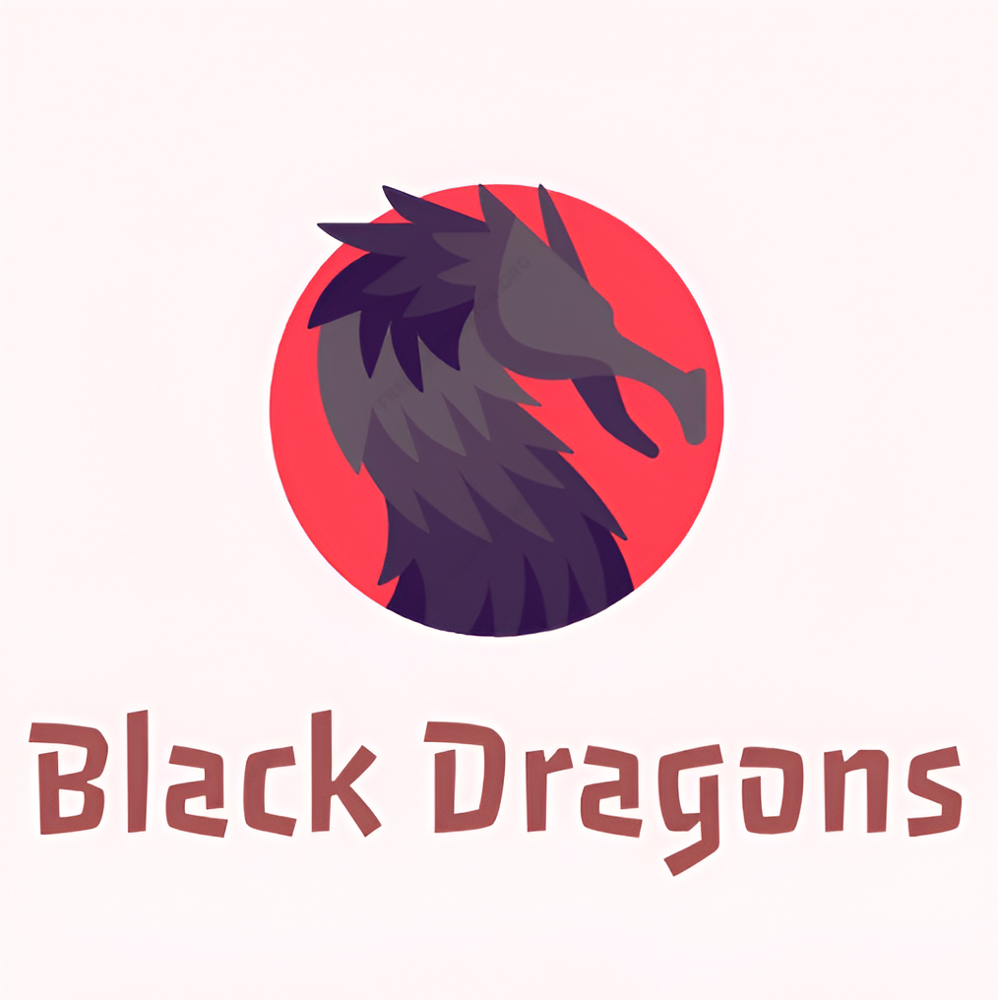

Black Dragons es una campaña que estuvo presente dentro de la sociedad de alumnos durante el ciclo 2023 - 2024 en secundaria, y ahora, conformada por las mismas personas, se postulará de nuevo en la prepa CEDI.

Ideología: Como grupo pensamos que las actividades de integración y no relacionadas con lo académico son importantes tanto para nuestro desarrollo del aspecto social como para el desarrollo del aspecto académico, porque podemos hacer actividades recreativas que nos agraden pero que al mismo tiempo nos inciten a seguir siendo estudiantes comprometidos y responsables en el colegio. Las nuevas generaciones cambian y los métodos de enseñanza de antes no funcionan de la misma manera ahora, por eso cada año se deberían hacer más nuevas e innovadoras actividades en beneficio de todo el alumnado.
Objetivos:
- Tomar las opiniones sugerencias, proposiciones, y descontentos de los y las estudiantes de la prepa CEDI.
- Completar con éxito todas las actividades en el planeador de la campaña, pero que al mismo tiempo haya flexibilidad y se puedan agregar o modificar estas propuestas.
- Recaudar una cantidad monetaria de $7500 pesos gracias a todas las vendimias de alimentos que se hagan a lo largo del ciclo. (Algo que se logró y se superó el año pasado en secundaria).
- Hacer de la escuela un lugar más agradable y próspero para todos los y las estudiantes!